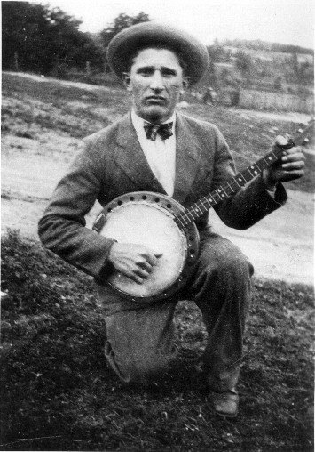

Banjoles voor Wolter en Katrien
Matti
02-08-2004
Na lang wikken en wegen over wat de juiste invulling zou moeten zijn van de ontspannende uurtjes na zonsondergang, kwamen bovengenoemden een jaar geleden overeen les te krijgen in het bespelen van de banjo.
Onder het motto: "Als ik iets doe, doe ik (het) Blankert", stonden beiden een jaar later op het wereldconcours de sterren van de hemel te spelen. Ook Anne Blankert en Tjebbo Mulder waren van de partij om het duo kracht bij te zetten middels hun triangel en ringtone geluiden. Het was een vrolijke aangelegenheid en zelfs de valse noot uit de triangel van Anne kon de pret niet drukken. De eerste plaats ging echter naar het dynamische duo Marcel Hacker en David Orvanjo, die hun snaarinstrumenten bespeelden als ware Buddy Wachter, de levende banjolegende zelve, in tweevoud weder gekeerd om het wereldconcours na jarenlange doodbloedingen en aderlatingen nieuw leven in te blazen. Dit wist een dermate frivoliteit bij het publiek, dat overigeens enkel uit Midden-Amerikaanse huisvrouwen bestaat, los te maken dat alle deelnemers ter plekke heilig werden verklaard. St Wollius de 2de en St Kaatia de 1ste, zien hun titel overigeens graag opgenomen in de nieuwe uitgave van de telefoongids
